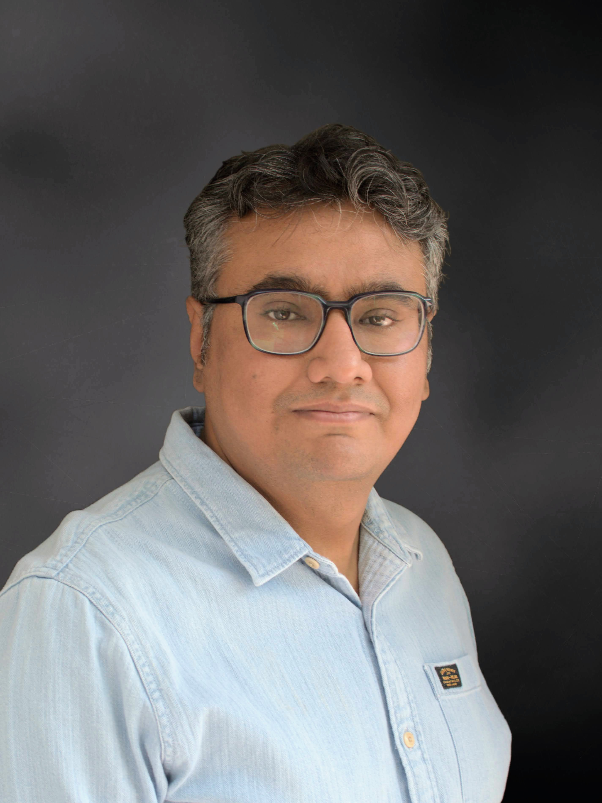

Welcome to the blog page of Manjeet Dahiya!
Manjeet Dahiya is the Head of Machine Learning and Data Sciences at Airtel Digital (Wynk and Xstream).
He was earlier a Principal Data Scientist with Delhivery, and before that he
worked with Agilent Technologies and United Online (Juno Online).
Manjeet obtained his PhD in computer science from IIT Delhi, and BTech in electrical engineering from IIT Kanpur.
Manjeet writes articles/notes on
data science, machine learning and AI, probability and
statistics, programming languages, and computer science in general.
Following are a few recent articles. For the complete list, checkout all
posts.